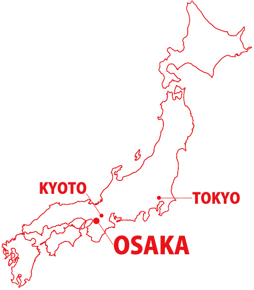

Discover Japan’s Geography
Japan is an island nation located in East Asia, stretching over 3,000 kilometers from north to south. It
is
made up of four main islands—Honshu, Hokkaido, Kyushu, and Shikoku—along with thousands of smaller
islands.
The country is known for its diverse landscapes, which range from snow-capped mountains in the north to
subtropical beaches in the south. Tokyo, the bustling capital, sits on the eastern coast of Honshu, while
Kyoto, with its rich history, lies inland, surrounded by mountains. Osaka, Japan’s third-largest city, is
located just to the southwest of Kyoto, along the Osaka Bay. Japan’s varied geography offers everything
from
rugged coastlines and volcanic peaks to peaceful forests and vibrant cities, making it a unique and
captivating place to explore.

EXPLORE JAPAN

|
JAPANESE CUISINE |
NIHON-RYORI
Japanese cuisine, or Nihon Ryōri
(日本料理), is known for its simplicity, seasonality, and emphasis on fresh, high-quality ingredients. From
sushi and sashimi to ramen and tempura, each dish offers a perfect balance of flavors and textures. It’s a
true reflection of Japan’s culture and respect for nature’s bounty.
|
|
TRAVEL JAPANESE |
RYOKOU
Japan offers a blend of vibrant
cities, ancient temples, and breathtaking landscapes. From the bustling streets of Tokyo to the historic
beauty of Kyoto and the serene beaches of Okinawa, each destination offers a unique experience that
reflects Japan’s rich culture and natural beauty.
|
|
JAPANESE CULTURE |
DENTOU
Japanese traditions are deeply rooted
in culture, from the serene tea ceremonies and elegant kimono attire to vibrant festivals like Obon. These
customs reflect respect for nature, family, and history, and continue to shape Japan’s unique identity.
|
JAPANESE TEA CEREMONY
The Japanese tea ceremony is a highly ritualistic and aesthetic practice, centered around the
preparation and consumption of matcha (powdered green tea). The ceremony emphasizes harmony, respect,
purity, and tranquility, often performed in a specially designed tea room. The process involves careful
attention to every detail, including the utensils, movements, and atmosphere.
JAPANESE ART
Origami (折り紙): The art of paper folding, origami is a symbol of Japanese craftsmanship. Simple paper folds
can create beautiful sculptures of animals, flowers, and more.
The word "origami" comes from the Japanese words "ori" (folding) and "kami" (paper).
This ancient practice has evolved into a highly sophisticated art form. Not just limited to decorative
pieces, modern origami has found practical uses in fields like engineering, robotics, and even space
science (like folding solar panels).
ZEN AND BUDDHISM
Zen Buddhism has profoundly impacted Japanese culture, emphasizing mindfulness, simplicity, and the
connection between nature and the self. Zen gardens, with their carefully raked gravel and stone
arrangements, represent an aesthetic of calm and introspection. Monks also practice meditation (zazen),
which is central to Zen's teachings.
A Poppy Blooms
Katsushika Hokusai
I write, erase, rewrite
Erase again, and then
A poppy blooms.
Erase again, and then
A poppy blooms.